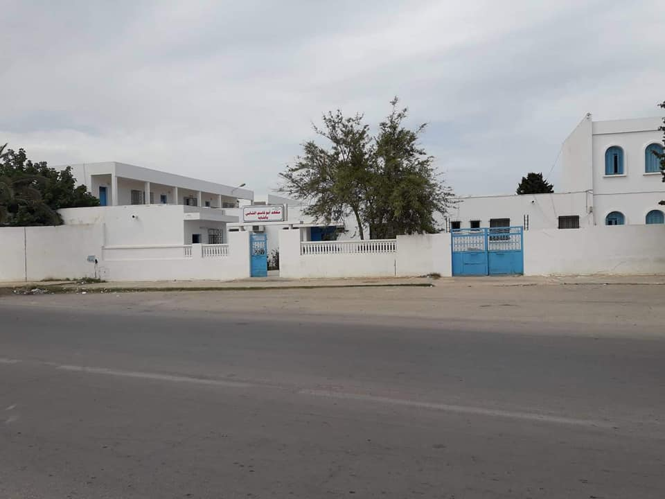
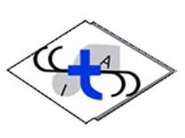

Curriculum Vitae
Éducation Secondaire
Lycée Abou El Kacem El Chabbi, Chebba, Mahdia
- De 2017 à 2021
- Spécialisation en études techniques
Institut Préparatoire
Institut Préparatoire de Gabès
- De 2021 à 2023
- Spécialisation en Physique et Techniques (PT)
Études Universitaires

ESPRIT, Tunisie
- De 2023 à 2026
- Spécialisation en Technologies de l'Information
Stage
InstaDeep, Tunis, Tunisie
- Développement d'un tableau de bord en JavaScript pour afficher et gérer une base de données
- Amélioration des fonctionnalités et de l'interface utilisateur du tableau de bord